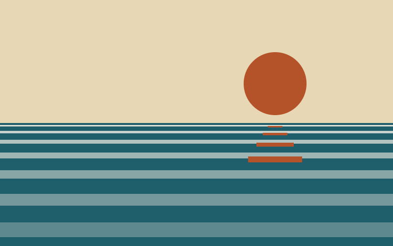

Feature · Salt
The Salt Pans at Low Light
On a stretch of coast where nothing is built to last, Marthe Visser keeps forty-one shallow pans of seawater and lets the sun do the only work that has ever mattered.
By Ines Calloway · · 5 min read

The first thing you learn at the pans is that salt is not made; it is permitted. Marthe Visser says this at six in the morning, boots already wet, while the tide table in her pocket goes soft at the folds. Seawater comes in through a single wooden sluice, spends three weeks crossing forty-one pans, each shallower than the last, and leaves as something you can hold.
The work is mostly waiting, and waiting is harder than it sounds. A pan that is too deep will not warm; one too shallow will crust before it is ready, and the crust comes out grey and bitter. Visser reads the water by colour: green at the start, then a flat milky teal, then, in the last pans, a pink so unlikely that visitors assume it is a trick of the light. It is the work of microscopic algae that thrive only in brine, and it tells her, more reliably than any instrument she owns, that the end is near.
What the wind decides
Wind matters more than heat. Heat warms the water, but wind carries off the moisture sitting just above it, and a still hot day will disappoint where a dry breeze will deliver. Visser keeps a rag tied to a post at the edge of the fourth pan. “That is my instrument panel,” she says. When the rag stands out straight she opens the sluice a hand’s width; when it hangs, she closes it.
Every pan is a question the weather answers in its own time.
The harvest
Harvest comes in late summer, over a handful of mornings, when the crust is thick enough to lift with a wooden rake and thin enough to stay white. The raking is done at dawn, before the sun can melt the first bitter layer back into the brine. The salt is heaped on the bund to drain, and by noon the pans look like fields after the first frost.
None of this will make anyone rich. The works turn out a few tonnes a year, sold to restaurants and to people who write to ask about the pink. What it produces instead is a kind of attention. Standing at the edge of the last pan as the light flattens, you notice how the horizon, the water and the white crust all arrive at the same colour for about ten minutes, and then separate again. Visser doesn’t look up. She has seen it eleven thousand times, she says, and expects to miss it.